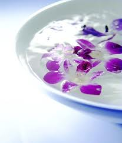

Trate bien a sus pies. Años de uso y abuso pueden maltratarlos por las enfermedades, la mala circulación, las uñas mal cortadas y el uso de zapatos que no alcanzan bien. mas >>
Clasicos!
Los recogidos y semirecogidos, son los peinados de fiesta mas usuales a los que una mujer suele recurrir en este 2011 para conseguir los looks elegantes y a la moda en una ocasión especial de gala, ya tenga un pelo rizado, ondulado o liso. mas >>
Los labios son una de las partes mas eróticas de nuestro cuerpo. Los usamos cuando hablamos, comemos y besamos, sin pretenderlo transmiten nuetra femininidad y sensualidad. Es por esta razón que el lápiz labial es el producto de belleza más vendido. mas >>
Tips a tener en cuenta
Maquillaje para los ojos
Maquillarse correctamente es una e-resizetaréa compleja que no todas las mujeres dominam, ya que combinar los colores y aplicar el tono que tu piel necesita es un trabajo que requiere de tiempo y dedicación. Si estas pensando en cómo conseguir maquillarte bien y en sacarte el máximo partido, sigue leyendonuestro especial maquillaje.

Maquillaje para que perdure el bronceado
Maquillaje para que perdure el bronceado... Con bases, cremas y rubores tostados, todo esto ayuda para que puedas lucir por más tiempo un bronceado envidiable. A continuación, Maquillaje...
Nuestros Sponsors

